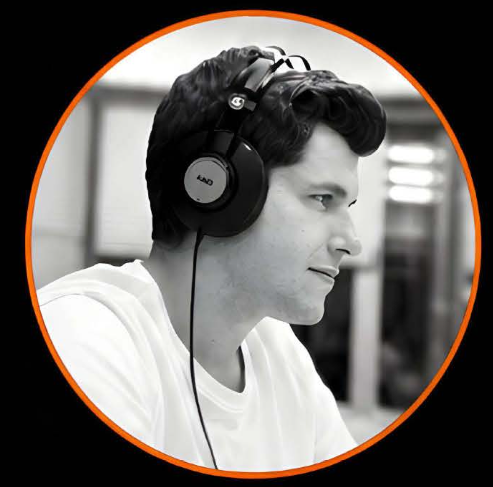

Editor de vídeo · Postproducción · Realizador audiovisual

Técnico audiovisual y creador de contenidos con más de 15 años de experiencia en televisión y plataformas digitales. Licenciado en Periodismo, especializado en realización, edición y postproducción. Realizador, editor de vídeo y operador de cámara en programas de televisión, contenidos deportivos y documentales.
Editor de vídeo y coordinador
Edición de vídeo y coordinación de la nueva televisión de La Séptima, que arranca en octubre de 2026.
Editor de vídeo
Edición y postproducción de contenidos documentales. Labores de realización, grabación y coordinación audiovisual durante la producción.
Editor de vídeo
Edición de reportajes para los programas del Mundial de MotoGP. Creación de vídeos musicales y cabeceras.
Editor de vídeo y ayudante de realización
Montaje en Avid Media Composer del programa en directo. Operador Vizrt Trio, gestión de envíos internacionales y coordinación con realización y redacción en directo.
Montador y creador de contenido
Montaje en Adobe Premiere Pro y postproducción con After Effects para la network. Gestión de canales de YouTube y contenido para redes sociales.
Redactor
Redactor de la sección de San Fernando.
Montador y operador de cámara
Montaje en Final Cut y cámara en videoclips, documentales, realizaciones en directo y reportajes sociales.
Montador y operador de cámara
Montaje de programas, informativos y publicidad. Cámara en realizaciones en directo y ENG.
ignaciogalindocruces@gmail.com
+34 692 35 69 92
San Sebastián de los Reyes, Madrid
Español (nativo) · Inglés